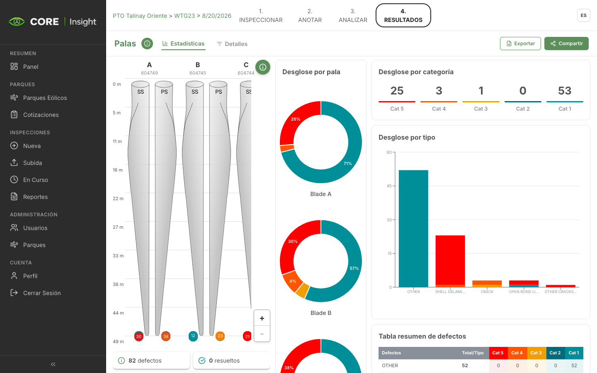

Encuentro Anual DPEC 2026 · 25 de noviembre
Mantenimiento y reparación de aspas
mediante acceso por cuerdas
De la inspección a la evidencia de reparación, en una sola plataforma: CORE Insight
Risto Martínez Ramírez · CORE-TEC SPA
El problema
Lo que hoy le cuesta al dueño del parque
Un trabajo en cuerdas bien hecho, pero difícil de demostrar y de seguir en el tiempo.
- Cientos de fotos por pala, repartidas en carpetas y correos.
- Defectos sin clasificación común: cada informe usa criterios distintos.
- Cotizaciones de reparación sin vínculo con el defecto que las originó.
- Reparaciones, limpiezas y certificaciones sin evidencia ordenada.
- Sin historial comparable entre inspecciones de la misma turbina.
La plataforma
CORE Insight: del defecto a la reparación certificada
Un solo registro por turbina. Cada servicio parte de lo que la inspección encontró.
1. InspeccionarDatos de vuelo y subida de fotos
2. AnotarMarcar defectos sobre la imagen
3. AnalizarTipo, categoría, causa y siguiente paso
4. ResultadosPosición en la pala, gráficos, informe
CotizaciónHoras hombre y materiales por defecto
ReparaciónEvidencia en 11 etapas
LimpiezaPor zona: palas, nacelle, hub, torre
Certificación de polipastosVerificaciones, mediciones y fotos
Punto de partida
Un parque, todas sus campañas
- Parque Fila de Mogote: 7 turbinas, 21.000 kW.
- Pestañas por servicio: inspección, reparación, limpieza de turbina y certificación de polipastos.
- Tabla de turbinas con última inspección y cantidad de inspecciones.
Fase 1Inspeccionar
Qué se voló y qué se subió
- Activo, turbina, modelo, fecha y estado de la inspección.
- Adquisición: fotografías, duración y estado RTK.
- Subida de fotos: subidas y pendientes.
- Mapa con la ubicación de la turbina.
- Buzón de documentos de la inspección.
Fase 2Anotar
Marcar el defecto sobre la foto
- Selector de pala (A, B, C) y cara (SS, PS, LE, TE) con diagrama de la pala.
- Fotos ordenadas por cara, con contador de revisadas, marcadas y anotadas.
- Herramientas: rectángulo, círculo, trazo libre, zoom, contraste.
- Modo de avance rápido.
- Comparación con la inspección anterior.
Fase 3Analizar
De la marca al defecto con criterio
- Se arrastra la anotación al editor de defectos.
- Tipo, categoría de 1 a 5, distancia a raíz y cara de la pala.
- Causa raíz y siguiente paso recomendado.
- Resumen por pala con numeración de defectos (A1, A2, B1...).
Fase 4Resultados
El defecto ubicado en la pala
Posición a lo largo de la pala, desglose por pala, por categoría y por tipo. Exportar y compartir por enlace.

Flujo de cotización
Del defecto a la cotización
- Se solicita desde los defectos de la inspección.
- Lista por aerogenerador y parque, con defectos, estado, total y fecha.
- Estados: solicitada, cotizada, aprobada.
- Acceso a la trazabilidad de costos.
Flujo de cotización
Costo por defecto, a la vista
- Cada defecto lleva su tipo, categoría, pala, cara y tamaño.
- Horas hombre, número de técnicos y tarifa por hora.
- Materiales con cantidad y costo unitario.
- Total por defecto y total de la cotización, en CLP o USD.
Flujo de cotización
Trazabilidad de costos
- Costo acumulado por parque y por aerogenerador.
- Número de órdenes de trabajo asociadas.
- Reparaciones en el tiempo.
- Cada orden se vincula con su defecto y su reparación.
Reparación
Evidencia por defecto y por etapa
- Se organiza por pala y por defecto.
- Categoría de inicio y final, técnico a cargo y % de avance.
- Se eligen las fotos que van al informe de cada etapa.
- Informe de reparación por defecto.
Etapas: etiqueta, análisis de falla, saneado, laminación, vacío, manta térmica, resultado, ajuste de superficie, filler, pintura.
Limpieza de turbina
Fotos por zona
- Zonas fijas: palas, nacelle, hub y torre.
- Subzonas, por ejemplo lado derecho y techo de la nacelle.
- Se eligen las fotos para el informe.
- Informe de limpieza en un clic.
Certificación de polipastos
Verificación, medición y foto
- Seis pasos: preparativos, inspección visual y mecánica, inspección crítica, torques, prueba de carga y cierre.
- Cada ítem es una foto, una verificación o una medición.
- Capturado por el técnico en la app móvil.
- Informe de certificación con las fotos elegidas.
Captura en campo
Cuerdas, dron y plataforma, un mismo registro
- App móvil del técnico: etapas de reparación, limpieza y certificación.
- Dron DJI Matrice 4E (en desarrollo): vuelo automático y fotos por cara y posición radial, subidas a la plataforma.
- Plataforma web: anotación, análisis, cotización, trazabilidad e informes.
Una inspección con dron puede priorizar dónde bajar con cuerdas.
En desarrolloInspección interna de palas
Ver el interior de la pala sin abrirla
La inspección con dron o cuerdas cubre la superficie exterior. El interior de la pala es de difícil acceso.
- Carrito automatizado que se posiciona dentro de la pala.
- Recorre cada zona y captura imágenes.
- La telemetría registra dónde está cada imagen a lo largo de la pala.
En desarrolloInspección interna de palas
Del carrito a la plataforma
La meta es que las imágenes internas lleguen al mismo flujo de inspección que ya se usa.
1. PosicionarEl carrito entra y se ubica en la pala
2. RecorrerAvanza por cada zona de forma automatizada
3. CapturarImágenes con la posición que informa la telemetría
4. Subir y analizarAnotar, categorizar y reportar como una inspección externa
Posición conocidaCada imagen queda asociada a una zona de la pala
Misma plataformaDefectos internos y externos en un solo registro por pala
Comparable en el tiempoMismo recorrido, misma zona, distinta fecha
Estado: proyecto en desarrollo.
Qué gana el dueño del parque
Decisiones con datos, no con carpetas
TrazabilidadDe la foto al informe, por pala y cara
ComparabilidadMismo criterio de categoría en todas las inspecciones
Costo claroCotización por defecto, con horas y materiales
EvidenciaReparación, limpieza y certificación documentadas
Gracias
Veamos su parque en CORE Insight
Coordinemos una demo con los datos de su parque.
Risto Martínez Ramírez · CORE-TEC SPA